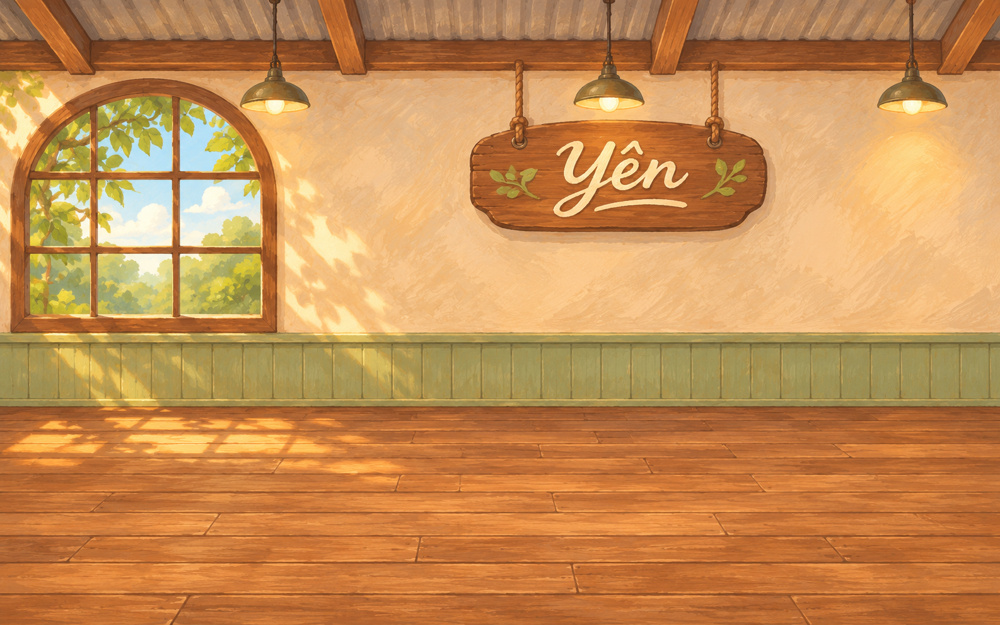
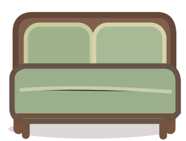
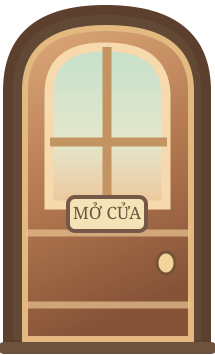
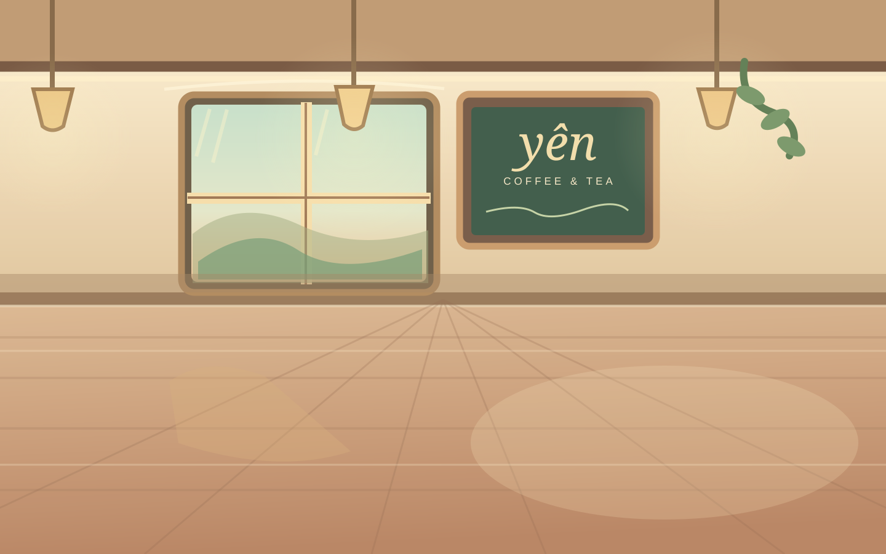
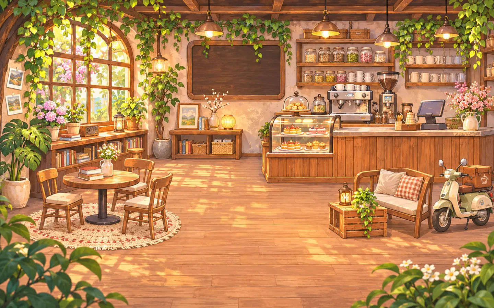

Nền Yên mới không dính đồ vật

Toàn bộ 6 trạm và các đồ vật nhỏ là sprite độc lập. Xem bảng so sánh nhân vật và bố cục (ảnh ghép offline).
Bảng đối chiếu sprite PNG với các đợt painted mới và lịch sử SVG cần thay. Nhân vật được đặt ở kích thước tương đương khi chơi, cạnh texture đồ vật. Đây là công cụ kiểm tra, không phải chứng nhận đã đồng nhất phong cách.
Chủ quán kiểm tra sau. Bàn · Ly, sách và gối · Quầy và máy pha

Toàn bộ 6 trạm và các đồ vật nhỏ là sprite độc lập. Xem bảng so sánh nhân vật và bố cục (ảnh ghép offline).
Kiểm tra góc nhìn, chất gỗ, nét viền, tỷ lệ và bóng đổ.

Kiểm tra độ mềm đệm, chi tiết vải và khả năng nhân vật ngồi thực.
Chiều cao tương đối, ánh sáng, thiết bị và nét cọ không khớp.

Đối chiếu kích thước, kính, viền và phối cảnh với nhân vật.
Phiến lá SVG đối xứng thiếu sự biến thiên của art vẽ tay.
Đối chiếu ánh phản chiếu, thể tích bánh xe, góc camera.
Đồ nhỏ cần nét cọ đồng bộ và kích thước đủ để cầm/tương tác.

Minh họa kiến trúc SVG không theo cùng ngôn ngữ với nhân vật PNG.

Mốc tham khảo cũ. Cần so trực tiếp với character art, không mặc định đã được duyệt.
Nét vector đều, các khối hình học và gradient rõ. Chưa được duyệt.